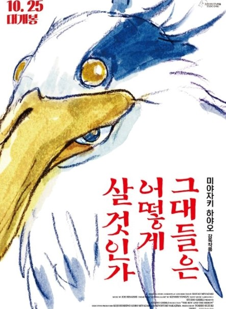
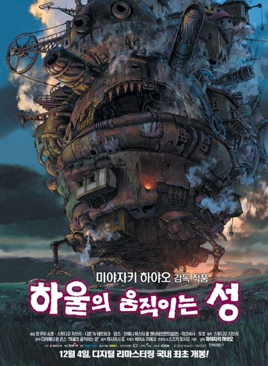
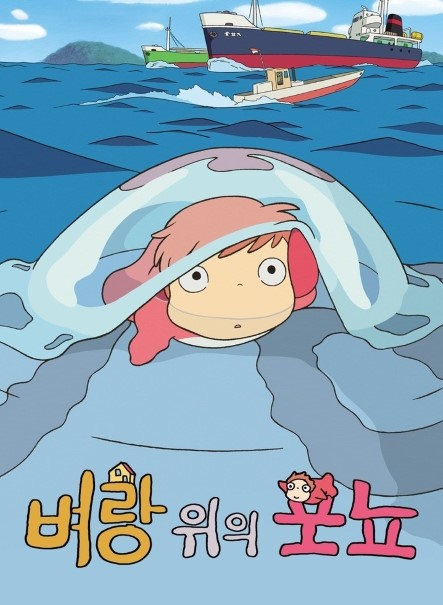

Click me!
금지된 세계의 문이 열렸다! 이사 가던 날, 수상한 터널을 지나자 인간에게는 금지된 신들의 세계로 오게 된 치히로... 신들의 음식을 먹은 치히로의 부모님은 돼지로 변해버린다.
“걱정마, 내가 꼭 구해줄게…” 겁에 질린 치히로에게 다가온 정체불명의 소년 하쿠. 그의 따뜻한 말에 힘을 얻은 치히로는 인간 세계로 돌아가기 위해 사상 초유의 미션을 시작하는데…

[[그대들은 어떻게 살 것인가]]
Click me!
화재로 어머니를 잃은 11살 소년 ‘마히토’는 아버지와 함께 어머니의 고향으로 간다. 어머니에 대한 그리움과 새로운 보금자리에 적응하느라 힘들어하던 ‘마히토’
앞에 정체를 알 수 없는 왜가리 한 마리가 나타나고, 저택에서 일하는 일곱 할멈으로부터 왜가리가 살고 있는 탑에 대한 신비로운 이야기를 듣게 된다.
그러던 어느 날, ‘마히토’는 사라져버린 새엄마 ‘나츠코’를 찾기 위해 탑으로 들어가고, 왜가리가 안내하는 대로 이세계(異世界)의 문을 통과하는데…!

[[하울의 움직이는 성]]
Click me!
소녀가 마법에 걸린 순간, 꽃미남 마법사의 성문이 열렸다!
어느 날, 영문도 모른 채 마녀의 저주로 인해 할머니가 된 소녀 ‘소피’. 절망 속에서 길을 걷다가 거대한 마법의 성에 들어가게 된다.
그곳에서 자신과 마법사 하울의 계약을 깨주면 저주를 풀어주겠다는 불꽃 악마 ‘캘시퍼’의 제안을 받고 청소부가 되어 ‘움직이는 성’에 머물게 되는데…

[[벼랑 위의 포뇨]]
Click me!
엉뚱 도도한 물고기 소녀 ‘포뇨’의 사랑을 찾기 위한 좌충우돌 모험이 시작된다!
포뇨, 해파리를 타고 바다를 가출하다! 호기심 많은 물고기 소녀 ‘포뇨’는 따분한 바다 생활에 싫증을 느끼고, 급기야 아빠 몰래 늘
동경하던 육지로 가출을 감행한다. 해파리를 타고 육지로 올라온 ‘포뇨’는 그물에 휩쓸려 유리병 속에 갇히는 위기에 처하게 된다.
포뇨, 바닷가 소년 소스케를 만나다! 때마침 해변가에 놀러 나온 소년 ‘소스케’의 도움으로 구출되는 포뇨. 이후 소스케가 마련해
준 초록 양동이에서 소스케와의 즐거운 육지 생활을 시작한다. 하지만 곧 바다의 주인이자 포뇨의 아빠인 ‘후지모토’에 의해
‘포뇨’는 다시 바다로 끌려가게 된다. 우여곡절 끝에 여동생들의 도움으로 탈출에 성공한 ‘포뇨’는 거대한 파도와 함께 ‘소스케’에게로 향하는데…
과연 포뇨는 이 난관을 뚫고 소스케와 다시 만날 수 있을 것인가?